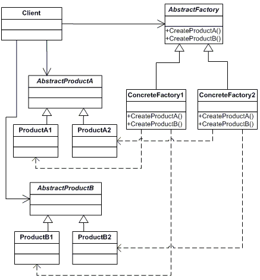

Породжувальні
Вони відповідають за те, хто і як створює об’єкт. Завдяки їм клієнтський код не пише new Concrete.
Лекція 06
Сьогодні ми розберемося, як створювати об’єкти, не розкидаючи new по всьому коду і не прив’язуючи клієнта до конкретних класів.
Вони відповідають за те, хто і як створює об’єкт. Завдяки їм клієнтський код не пише new Concrete.
Вони показують, як скласти класи разом: через обгортку, фасад або дерево. Ми розглянемо їх на лекції 07.
Вони описують алгоритми та способи ефективної комунікації між об'єктами. Завдяки їм можна гнучко розподіляти обов'язки та керувати складними потоками виконання. Цю тему ми детально розберемо на лекції 08.
Звичайний метод зі switch. Це не патерн GoF, а просто спосіб заховати виклик new.
Патерн GoF, у якому виклик new відбувається в перевизначуваному методі класу-нащадка.
Патерн GoF, де фабрика створює цілу сім’ю сумісних продуктів (наприклад, кнопку та вікно однієї теми).
Тут клієнт просто каже «дай email» і не знає конкретного класу. Але якщо ви додасте новий канал, вам доведеться правити цей метод — згадайте проблему зі switch у принципі OCP.
static class NotifierFactory {
public static INotifier Create(string channel) => channel switch {
"email" => new EmailNotifier(),
"sms" => new SmsNotifier(),
_ => throw new ArgumentOutOfRangeException()
};
}switch, що грубо порушує принцип OCP (Open-Closed Principle). Це робить клас крихким і ускладнює підтримку. Альтернатива: Фабричний метод (якщо створення складне) або реєстрація в DI-контейнері, який сам підбере потрібну реалізацію.У цьому патерні базовий клас описує загальний сценарій, а вже його нащадок вирішує, який саме продукт потрібно створити.
abstract class Dialog {
public abstract IButton CreateButton();
public void Render() => CreateButton().Draw();
}
class WinDialog : Dialog {
public override IButton CreateButton() => new WinButton();
}Create(). У такому разі для кожного нового продукту (наприклад, PdfReport) вам доведеться створювати окремий клас-фабрику (PdfReportFactory), яка просто робить new. Це створює "паралельні ієрархії" та засмічує проєкт десятками порожніх класів. Альтернатива: Проста фабрика (для тривіального створення) або DI-контейнер.У .NET ви часто зустрінете схожі підходи: LoggerFactory, DbProviderFactory.
Якщо треба лише обрати клас — один switch дешевший за ієрархію порожніх фабрик.
static class ReportFactory {
public static IReport Create(string type) => type switch {
"pdf" => new PdfReport(),
"excel" => new ExcelReport(),
"html" => new HtmlReport(),
_ => throw new ArgumentOutOfRangeException()
};
}Так, новий формат змусить правити цей метод — це б’є OCP. Але один switch тримати легше, ніж десяток класів, у яких лише Create().
Якщо мета — щоб клієнт залежав від IReport, а не від new PdfReport(), контейнер уже вміє бути фабрикою. Це лекція 05.
services.AddTransient<IReport, PdfReport>();
services.AddTransient<ReportMailer>();
class ReportMailer {
private readonly IReport _report;
public ReportMailer(IReport report) => _report = report;
public void Send() => _report.Save();
}Окремий ReportFactory тоді не пишете. Клієнт отримує залежність у конструкторі.
Лише якщо базовий клас має сценарій, а Create() — маленький гачок у ньому. Часто поруч із шаблонним методом.
abstract class ReportExporter {
public string Export() {
var report = Create();
report.Build();
return report.Save();
}
protected abstract IReport Create();
}
class PdfExporter : ReportExporter {
protected override IReport Create() => new PdfReport();
}Якщо в базовому класі лише Create() і більше нічого — ієрархію ви роздули даремно. Беріть просту фабрику або DI.

Тут діє правило: одна фабрика створює одну сім’ю об’єктів.
IUiFactory доведеться додати CreateRadioButton(), вам доведеться відкривати та змінювати абсолютно всі наявні конкретні фабрики (Win, Mac, Linux). Це класичний "ефект дробовика", який ламає OCP та може зламати публічні API. Патерн ідеальний лише тоді, коли склад сім'ї фіксований, а от нові стилі (теми) додаються часто. Альтернатива: Фабричний метод.interface IUiFactory {
IButton CreateButton();
ICheckbox CreateCheckbox();
}
class WinFactory : IUiFactory { /* Win* */ }
class MacFactory : IUiFactory { /* Mac* */ }
void Paint(IUiFactory ui) {
ui.CreateButton().Draw();
ui.CreateCheckbox().Draw();
}AddSingleton.AppCache.Instance десь у глибині свого коду. Через це неможливо підмінити реалізацію моком під час юніт-тестування. Крім того, наївна реалізація часто страждає від проблем із багатопоточністю. Альтернатива: Впровадження залежностей (DI) — реєструйте об'єкт як AddSingleton.public sealed class AppCache {
private static AppCache? instance;
private AppCache() {}
public static AppCache Instance {
get {
if (instance == null)
instance = new AppCache();
return instance;
}
}
}
WithX().WithY().Build().new Object { Prop = ... } (Object Initializer) або параметри за замовчуванням. Альтернатива: Object Initializer або Фабричний метод.var sql = SqlBuilder.Select<User>()
.OrderBy(_ => _.RegistrationDate)
.Take(10)
.Build();
// CommandText + параметри
// інший «будівельник» — під PostgreSQL чи MS SQLЦей патерн дозволяє скопіювати вже зібраний об’єкт. У C# для цього існують ICloneable та MemberwiseClone.
MemberwiseClone() робить лише поверхневу копію (shallow copy), що призведе до несподіваного спільного доступу до вкладених даних між оригіналом і клоном. Написання ж надійної глибокої копії вручну часто перетворюється на нескінченну боротьбу з багами. Альтернатива: Фабричний метод для створення з нуля.Деталі про поверхневе та глибоке копіювання ми розберемо на лекції 09.
Export, Render).Instance.Після лекції
На лабораторній роботі ви реалізуєте SqlBuilder — напишете fluent-інтерфейс для вибірки й сортування даних під PostgreSQL та MS SQL.
На наступній лекції ми перейдемо до структурних патернів: ви дізнаєтеся про обгортки й фасади, які допомагають поєднувати класи, а не створювати їх.